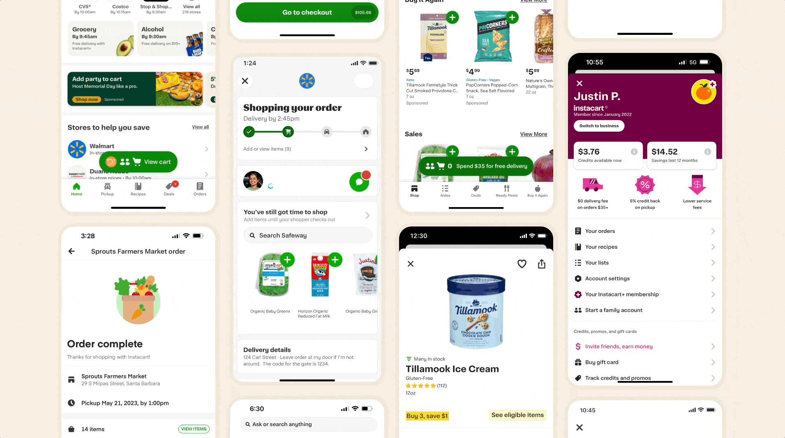

I joined Instacart just after their rebrand and the company was planning its IPO. It was clear that the existing product ecosystem was not going to support the scale, quality, or velocity required to increase growth and generate shareholder value.
We built products for 1,800+ retailer banners across 100k+ locations in 15k+ cities. We scaled internationally to serve over 25 million users and grew a 600,000+ shopper community across the globe.
Across the consumer, shopper, enterprise and in-store products, the UI was deeply fragmented. Many previous system attempts existed in various states of incompleteness. Many were built with many inaccessible components, some were available for only one platform, and many were abandoned after launch. The result was a fractured experience, saturated with tech and design debt, and no reliable path to the brand's evolution or white-label theming.
This was not a design gap. It was a systemic, cross-functional problem.